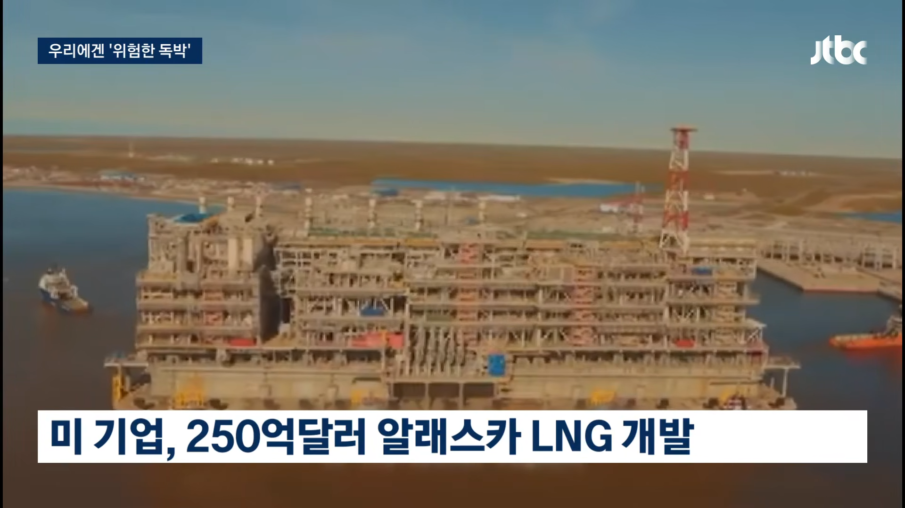
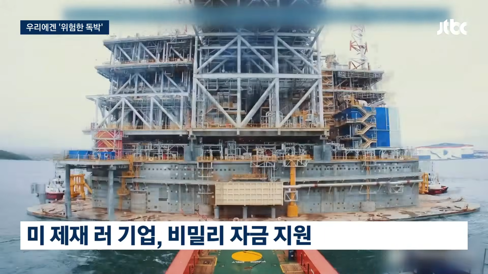
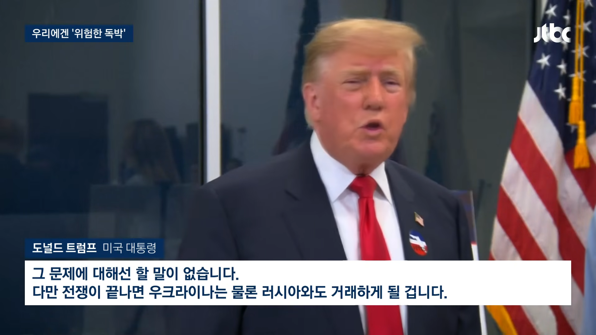
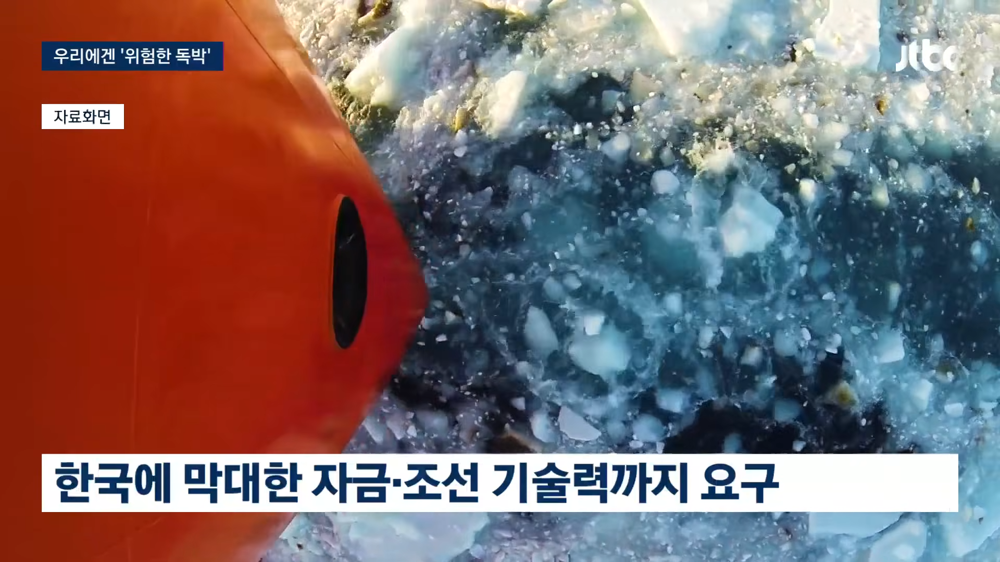
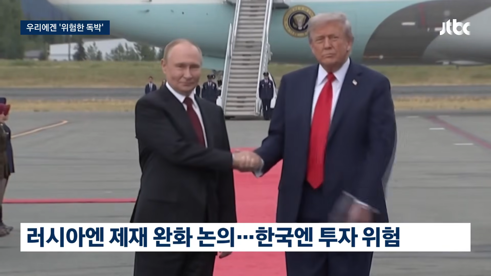

1. 트럼프는 한국에 알래스카 LNG 사업에 투자하고, 기술도 내놓으라고 압박함
2. 우리나라는 미국 기업이 투자하면 검토해 보겠다고 함 (애초에 수익성이 없어서 미국 기업은 투자 안할 가능성이 높았음)
3. 투자하겠다는 미국 기업이 안나타나자 트럼프는 러시아에 투자 해주면 제재 완화 해준다고 제안함
>> 우리나라는 러시아랑 같이 사업하면 EU에서 겁나 싫어해서 못한다고 밝힘. 돈도 안되는 사업이라 하기 싫었는데, 핑계가 생긴거ㅋ
어짜피 중간선거뒤로 식물될거 그냥 뻐기면 됨